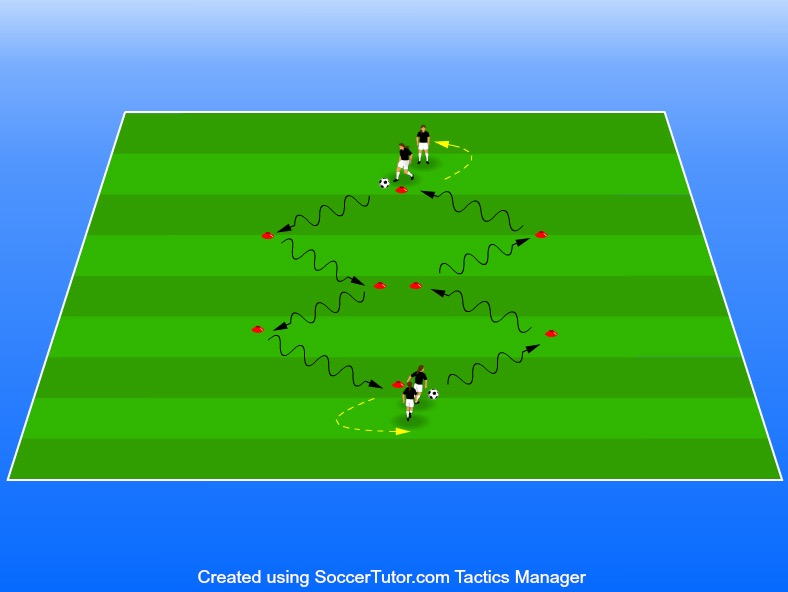

Att träna på vändningar och finter så att man känner sig trygg i utmanandet av en annan spelare. Bollkontroll och trygghet utvecklas även av denna övning.
6-8 spelare
Sätt upp koner efter bilden
Se till att finten/vändningen som ska göras händer vid varje kon
Ställ spelarna mot varandra som visat ovan.
Nivåindela gärna uppställningarna så att tempot anpassas efter nivå.
Kroppsfint Gör en rörelse åt ett håll med kroppen och gå sen åt
Överstegsfint andra hållet med bollen Gör en utåtgående cirkulär rörelse över bollen med ena benet och flytta bollen snett framåt med utsidan med andra
Cruyff-vändning foten. Oftast kombinerad med en skottfint. Flytta bollen
Utsida bakåt med toppen av insidan av foten.
L-fint bakom Vänd med utsidan av foten. Dra bollen bakåt och flytta den åt sidan med insidan
Scoop av foten bakom stödjebenet. Låtsas slå en pass åt ena hållet och dra sedan med dig bollen i
Insida framför ben en mjuk, rund rörelse förbi motståndaren åt andra hållet.
Insida bakom ben Vänd med insidan framför stödjebenet. Vänd med insidan av foten bakom stödjebenet.